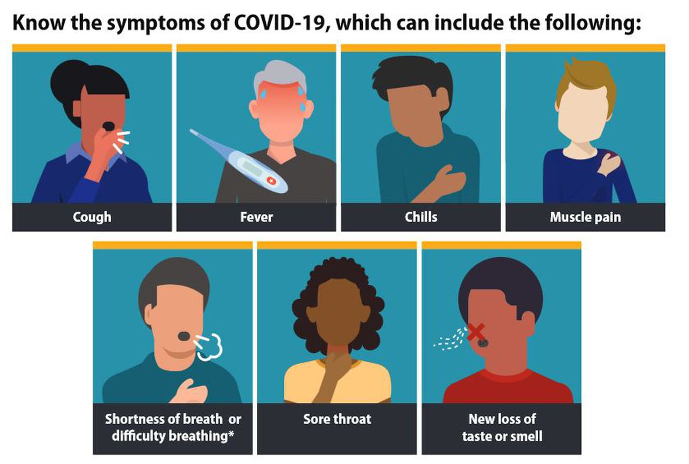

What are the symptoms of COVID-19?
The most common symptoms of COVID-19 are fever, tiredness, and
dry cough. Some patients may have aches and pains, nasal
congestion, runny nose, sore throat or diarrhea. These symptoms are
usually mild and begin gradually. Some people become infected but
don’t develop any symptoms and don't feel unwell. Most people
(about 80%) recover from the disease without needing special
treatment. Around 1 out of every 6 people who gets COVID-19
becomes seriously ill and develops difficulty breathing. Older people,
and those with underlying medical problems like high blood pressure,
heart problems or diabetes, are more likely to develop serious illness.
People with fever, cough and difficulty breathing should seek medical
attention.

 View Statistics
View Statistics